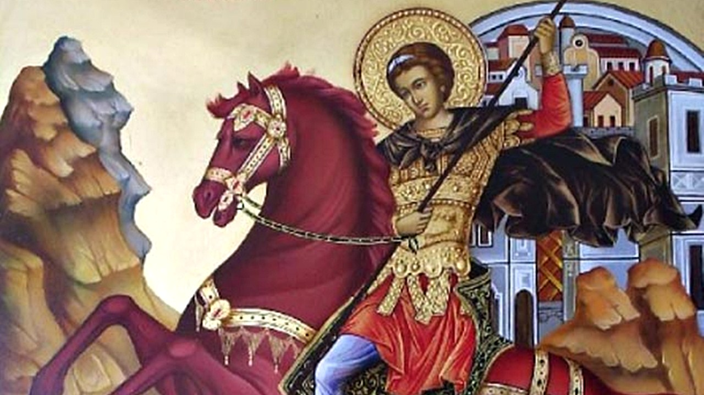
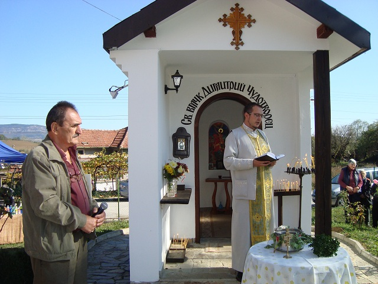
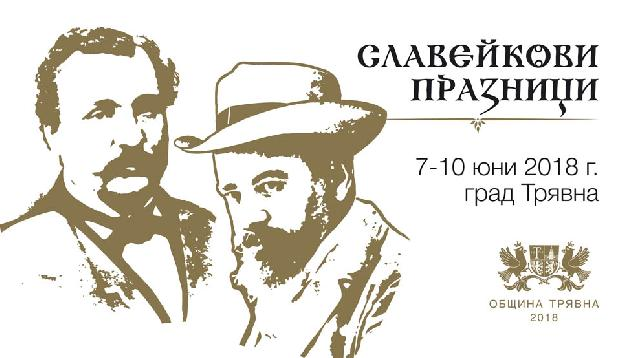
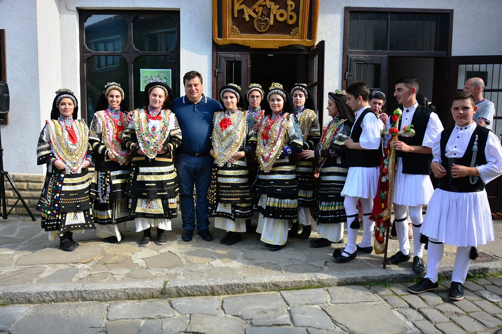
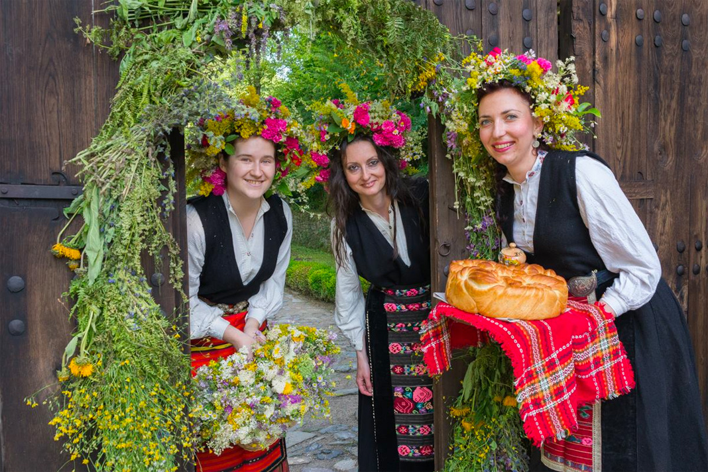

Трявна-Традиции и обичаи
Димитровден
| Димитровден е народен и православен празник, отбелязван на 26 октомври в памет на свети Димитър Солунски. Димитровден е изпълнен с много гадания за предстоящата зима и година: ако месечината е пълна - пълен ще бъде и кошерът с мед и ще се роят пчелите. Вечерта срещу празника, овчарите хвърляли в кошарата една тояга. Ако на сутринта овцете са лежали на нея, се смятало, че зимата ще е дълга, тежка и студена. |  |  | На Димитровден на трапезата се приготвя курбан или гювеч от овнешко, яхния с пиле - с петел ако именикът е мъж, и с кокошка - ако е жена. Сервират се и зеленчуци. Също на масата се слага варена царевица, пестил, пита с ябълки, банички с ябълки или просто печени ябълки, рачел, тиква. На този ден празнуват: Димитър, Димислава, Димитрина, Димитрия, Деметра, Дима, Димка, Димчо, Димана, Митко, Митра, Митка, Митрана, Мита, Диян/а, Диан/a. |
Славейкови празници
|
Славейковите празници се осъществяват всяка година в края на месец май или началото на месец юни. Националните Славейкови празници
представляват конкурс за лирическо стихотворение на името на Петко и Пенчо Славейкови и награждаването на отличните творби. Участие в конкурса
могат да вземат автори от цялата страна, които изпращат по една творба. Победителят получава награда, парична или материална. Така,Трявна не
просто пази духа на Славейкови - баща и син от забрава, но с гордост носи думите и делата им през времето до наши дни.
Международно признати български артисти ще участват в тържественото честване на традиционните "Славейкови празници" в Трявна от 7 до 10 юни 2018г.
В сцени за различни прояви по време на тържествата се превръщат читалище "Пенчо Славейков", галерия "Казаков", Калинчевата къща, Старото школо. Дебати по зададена тема, етнографски изложби, изложба-базар на книги, научни конференции по литературни въпроси, както и концертни изяви на популярни артистични и фолклорни състави- всичко това е само част от съвременния смисъл и съдържание на Славейковите празници в Трявна. Програмата на празниците включва гостувания на фолклорни ансамбли, камерни оркестри, театрални постановки и изложби. Тържествата се провеждат под патронажа на Президента на Република България. |
 |
|  |
Еньовден
| Еньовден е празник в български народен календар който се чества на 24 юни всяка година. На този ден своя имен ден празнуват всички с имена Яни, Яне, Яна, Янка, Янко, Яница, Янин, Янина, Янита, Янета, Яниса, Янимир, Янимира, Янислав, Яно, Яньо, Янчо, Енчо, Еньо, Иван, Ивана, Иванка, Йоан, Йоана, Даян, Даяна, Дилян, Диляна, Диян, Дияна, Деян, Деяна и имена на билки. Задължителен е обичаят за масово къпане. Вярва се, че сутринта на празника, когато изгрява, Слънцето „трепти“, „играе“ и който види това, ще бъде здрав през годината. Точно по изгрев, всеки трябва да се обърне с лице към него и през рамо да наблюдава сянката си. Отразява ли се тя цяла, човекът ще бъде здрав през годината, а очертае ли се наполовина – ще боледува. |  |